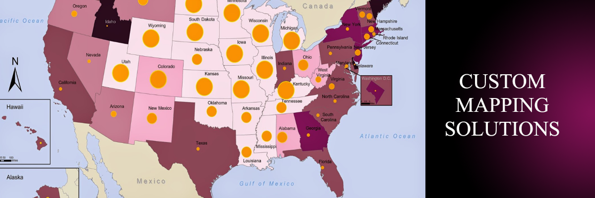
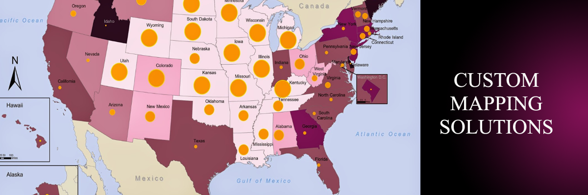

About Us
At Group 2 Consulting, we advise individuals and businesses on the use of GIS and geospatial systems and technologies for a variety of projects. We work for a wide range of industries, including technology, transportation, law enforcement and construction.
We are responsible for collecting, analyzing and storing geographical data. Group 2 tailors solutions to improve your specific processes, services and profits. We also implement software systems, update and maintain data, organize GIS data into a user-friendly format and serve as the primary contact for GIS-related problems.
column1-put something in here
column 2 -put something in here
column 3 -put something in here
column 4 -put something in here
Testimonials
"Group 2 Consulting is a young firm, but it has proven to be a remarkable partner."
T. Potts, President
418 Industries
I first came across Group 2 Consulting in my time collaborating with a constrution firm, who handled support aspects for the company. Their work, even then, was far beyond what I had come to expect in the industry. They are the first people I turned to for advice.
R. Slate, Manager
Bedrock Quarrel and Gravel Company
Comment
A. Lovelace, Project Leader
Municipality of Greater London